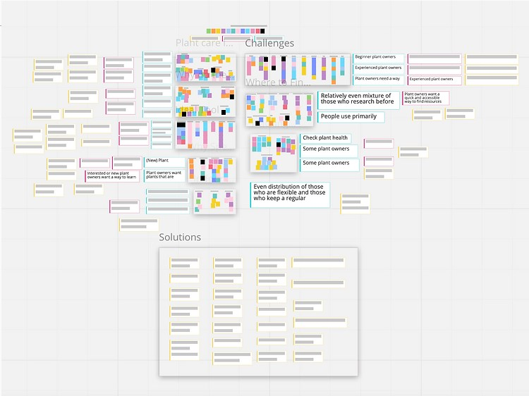

Rooted.
An app to help new plant owners learn more about how to care for their plants.
Background
Project for Human-Computer Interaction Class 2022
Course Instructor: Matthew Bietz
Duration: 10 weeks
Role: UI/UX Designer
Team: Hannah Limary, Carly Chan, Regina Tambunan, Kevin Tsai, Rohan Hemrajani, Me
Project Scope
Problem Overview:
- 70% of millennials call themselves a “plant parent”
- 40% of millennials plan to buy a houseplant this year
- 67% of those who do have plants say “plant parenthood” is tougher than they expected it to be
Problem Statement How might we educate plant owners about their plants and how to care for them, in and around their home?
Competitive Analysis
Our group analyzed 6 different direct and indirect competitors; these groups involved topics of plant care, education, and habit tracking. We looked into gardening apps such as Planta and Gardenia, other types of identification apps such as DogScanner and Shroomify, as well as Youtube channels that detailed testimonials of people’s plant journey as well as offering experience-based advice. We selected our dimensions based on what we thought might be important to address in the problem space (specifically education, reminders, and habit tracking) as well as what features could enhance our design if we implemented them (such as advice/chatting/and social capabilities, journaling, and item identification).
Significance & Takeaways
By conducting our competitive analysis on apps in a similar target space, we were able to identify key features we should include in our own app design as well as certain features that may not be as relevant or desired to our target audience. Overall, this, in combination with our user interviews and key insights, was able to help inform the design decisions and ideation process needed for our final prototype.
User Interviews
In order to fully understand the problem space, we conducted user interviews to gain insight on what needs the potential users of our app would have, as well as understanding their current life and daily workflow with respect to how our app would fit within that.
Potential Participants:
- We want to have at least 2 participants interviewed by each person, potentially more if possible → will likely interview more in order to find a mix of indoor/outdoor experience and to refine our problem statement
- Ideally:
- People who are interested in becoming plant owners
- People who consider themselves new to plant ownership (less than 1 year of ownership)
- People who consider themselves experienced plant owners
- A mix of participants who keep indoor plants and participants who keep outdoor plants
In terms of recruiting, our group utilized some of our parents, acquaintances, roommates, etc. who had fit within these criteria.
 View Miro BoardKey Inisghts
After conducting the interviews, we reconvened as a team to assess our findings and identify key insights using a miro board. On the miro board, each member of the team noted key findings that stood out to them. After writing all the relevant information gathered from our data, we began grouping any correlating ideas and took note of key patterns.
According to novice plant owner interviewees, maintaining a care taking schedule and building good initial habits are difficult. Almost all participants described over- or under-watering as a key factor in the death of their plants. Cognitive psychologists suggest that over 40% of daily human behavior is considered a habit (Walesh). Thus providing a solution that allows them to effectively and routinely maintain their plants would be highly beneficial long-term.
User Tendency
Individuals use a variety of mediums to learn and understand how to better care for their plants.
90% of all interviewees indicated that online resources are their source of knowledge and where they go to find new information. Combining a variety of mediums such as YouTube, mobile apps, discussion forums and graphics/diagrams , individuals can form a better understanding on how to take best care of their specific plants in their specific circumstance/situation. According to researchers, reducing complexity and presenting information in different means increases comprehension by up to 43% (Fergusson).
User Tendency
Novice plant owners fixate their care attention on water and sunlight.
When asked what plant care looks like to them, 4/5 novice plant owner interviewees described plant care as water and sunlight. This could be because they have limited knowledge. As one interviewee said, "it's just a plant so it just needs water and sunlight." This is very different from experienced plant owners, who acknowledge many more areas of interest that plant care requires (including soil pH, root care, and humidity). This indicates that novice plant owners could greatly benefit from plant care education.

User Goals & Challenges
Plant owners don't want to keep a strict schedule for plant care, but still want to be consistent.
We found that 8 out of the 10 plant owners we interviewed didn't have or want to implement a strict schedule for plant care. Yet, consistency was still listed as a goal by the majority of interviewees. Plant owners would rather determine care based on needs rather than following a strict schedule. This can be seen in notes on the affinity map below, where the "flexible schedule" area contains user tendencies we recorded. According to botanists, "plants thrive on consistency," making consistent care an important factor whether users actively seek to achieve it or not.


Protoyping
To better represent our insights through actionable means, we created user personas of our target audience. These personas allowed us to better understand our user’s needs, possible backgrounds, and goals for navigating our app. Using this knowledge, we were able to ensure we addressed all relevant user goals and needs in the design of our app.

In order to better understand possible scenarios regarding our plant care and reminder features, we created storyboards representing how someone would use our app.

Explore, Encyclopedia, Reminders, Scanner and User Profiles are the main features of our app. We included an encyclopedia feature on our prototype because through interviews we found that new plant owners wanted to learn more about plants overall and we thought this solution would allow users to easily find out more about specific species. The encyclopedia feature is intended to be a convenient lookup with pertinent information regarding plants and their care readily available. The scanning feature in particular is one we decided to integrate after doing our competitive analysis, where we found several competing/similar applications that had this capability readily available. The scanner would allow users to quickly identify a plant without them having to know any background information or knowledge on the plant, which is important for new users. According to the reviews, an overwhelming amount of users in general found this an extremely useful feature which is why we are building it as one of the key capabilities in of final prototype. As discovered in outside literature as well in the majority of user interviews where the interviewee was a novice, first time plantowners have a difficult time remembering when and how much to water their plants. Outside literature emphasizes building good habits, which is why the reminders feature is another integral part of our app design. Including tools that help individuals to build a good routines provide long term benefits for their plant care regimen. The explore page helps customize each users experience by showing them what species they can grow in their local area (assuming location services are enabled) and displays trending plants nearby. This increases user retention as well as provides a better overall user experience to plantowners of all levels, beginner to advanced, which is why we have chosen to include it in our final prototype- being able to filter based on geolocation or season allows for increased usability across the board.
Significance & Takeaways
In creating tangible prototypes, we learned a great deal about how users would physically interact with our solution. We were also able to better visualize how each planned feature would actually be utilized to meet a user need. The prototype served as our foundation for the evaluation and refinement stages later on.
Evaluations
To evaluate our high-fidelity prototype, we created a usability testing process. This process was designed for an interviewer to walk a user through a series of tasks, testing the usability of the screens and flows we included. We ended up conducting usability tests on 5 users, all new or interested plant owners (our target audience).
Key Findings
Positives
1. Reminder system is highly appreciated - 3/5 users mentioned that the reminder system was helpful. This verified our initial hypothesis that the reminders would be useful to new and interested plant owners.
2. Scanning feature is convenient and of high value to these new plant owners - 3/5 users expressed praise for the convenience of the scanning feature, indicating that it relieved a key pain point for our target users.
Key Findings
Negatives
1. Hamburger menu caused confusion since it wasn’t utilized - 4/5 users commented about the hamburger menu, due to its lack of functionality during usability testing.
2. Button contrast can be improved - locating buttons was difficult at times due to poor visibility. Several participants mentioned that the color of buttons or other icons made it difficult to locate/recognize as clickable items.
Key Insights
Overall
Users really liked the app's interface, with an average overall rating of 8.4/10. Next steps would include leveraging the insights we discovered during usability testing to improve our app's user experience.
Significance & Takeaways
By evaluating our prototypes through usability testing, we were able to learn about the user experience of our primary features including what people liked and disliked. This informed the basis for our final prototype iterations.